The Next SoundCloud
Our take on build scripts,
AMD and MVC
November 2012
Subjects
Next SoundCloud:
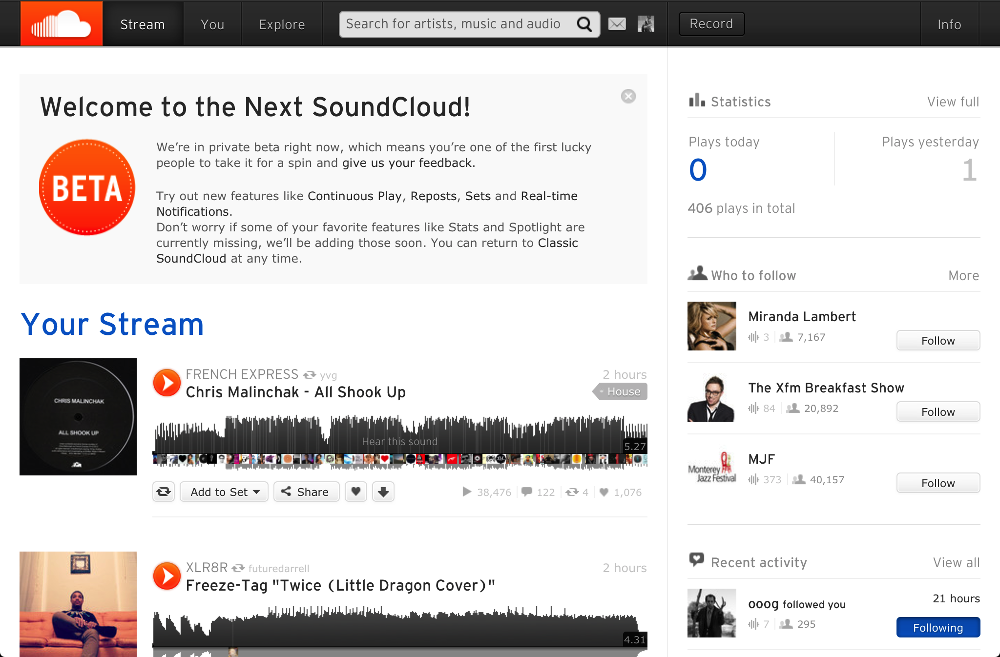
HTML5 Widget:
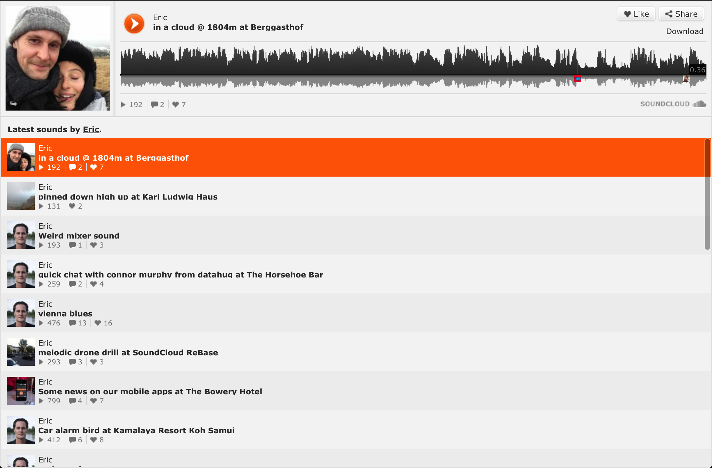
Fat Client
- Dependencies
- Dev vs Production Environment
- Backbone modules
Dependencies
<script> tags
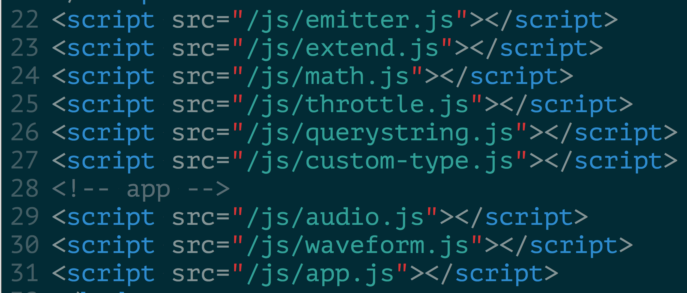
Dependencies
<script> tags
- Manual ordering
- Lots of synchronous requests (resolved by building)
- File names and JS code aren't aware of each other
- Must load everything (no conditions)
Dependencies
Script loaders
($LAB.js, script.js etc.)
Dependencies
Better, but still
- Manual ordering
- File names and JS code aren't aware of each other
Dependencies
Modules (AMD + common.js)
- Clear overview of dependencies
- Wrap code in closure and extract piece of functionality as a property of
exports)
- Not only JS can be loaded – templates, CSS (wait for it)
Dependencies
Modules (AMD + common.js)
We use require.js and almond.js
Dependencies
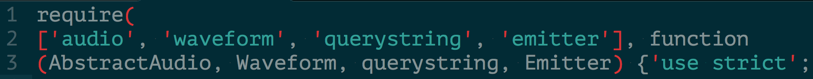
^ Not DRY, easily automated
Dependencies
Development Server
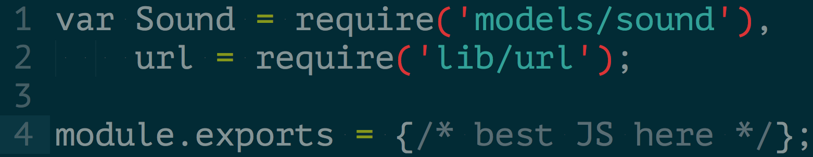
Becomes
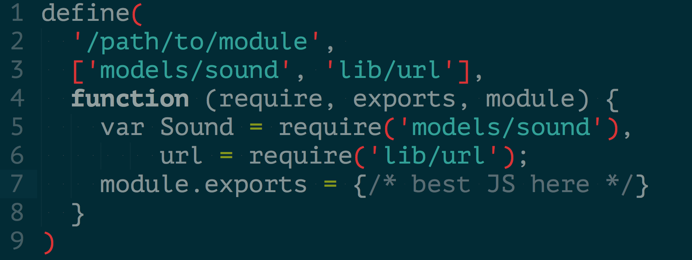
Environments
Build script
- Also node.js => can reuse configs from development server
- Resulting app is just HTML/CSS/JS talking to API
Environments
Build Optimizations
- Use Uglify.js to parse code into AST (Abstract Syntax Tree, think DOM for JS)
- ^ configs shared with development server
- Inspect and manipulate from there
Build Optimizations
`ast_mangle`
Substitute constants with respective values
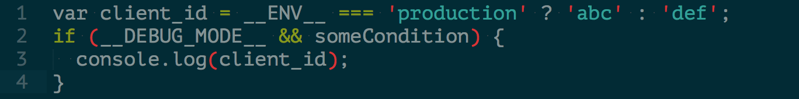
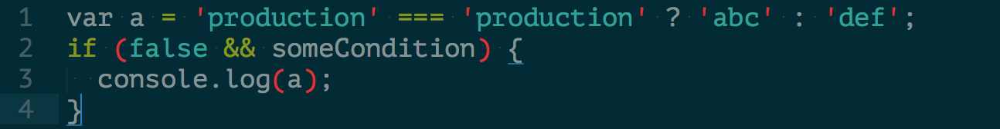
Buiild optimizations
`ast_squeeze`
Mangled dead code removal and more
Backbone Modules
Views as Components
- Independent and reusable
- Can include subviews and subviews… and subviews…
- Mostly very small (some quite big)
- Must play nice
Backbone Modules
Coding Style
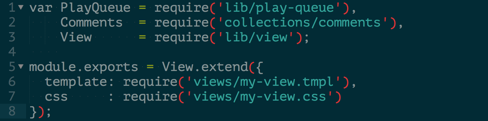
Templates
Handlebars
- Neat, almost logic-less templates
- Pre-compiled for speed – faster to render, smaller to deliver
- Custom helpers
required as AMD module (as they are compiled to JS)
Backbone Modules
CSS AMD modules?
Backbone Modules
CSS AMD modules!
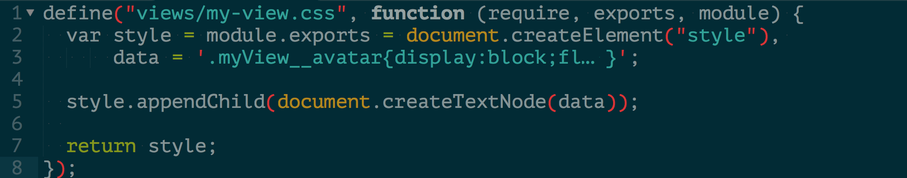
Writing CSS, dev server / build script wrap it with AMD definition
Backbone Modules
Views added via Templates
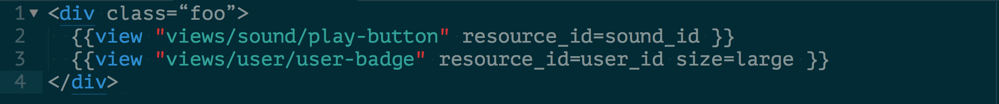
Backbone Modules
Reusable views with shared model
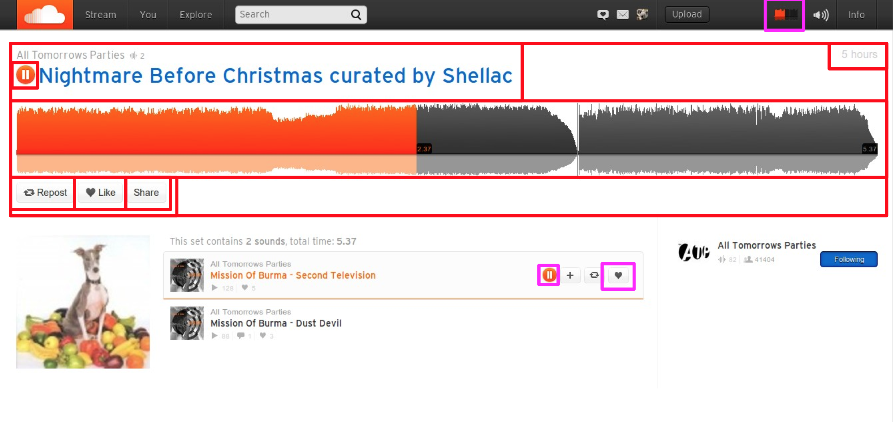
Backbone Modules
Reusable views with shared model
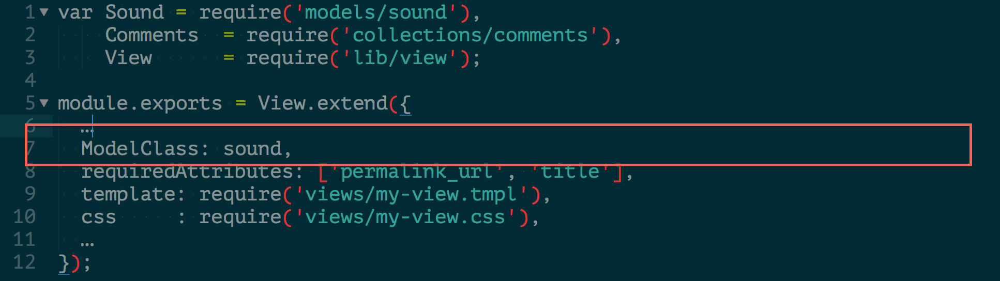
Backbone Modules
Models
Identity map behaviour
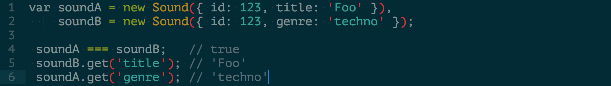
Backbone Modules
Models
Identity map behaviour – how?
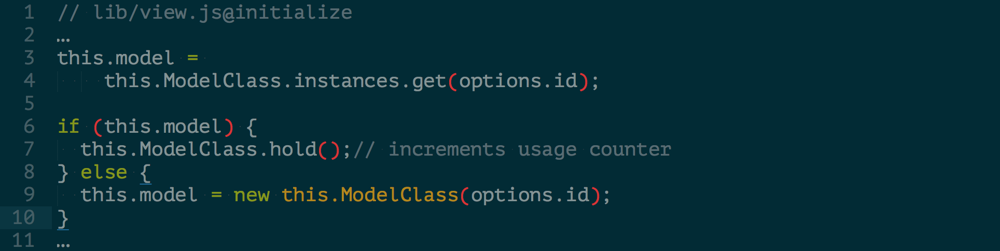
Backbone Modules
Models
- Models fetched once, rendered many times
- Different views synced through model events
- Nice side effect – full use of response
Backbone Modules
Models
Sub-resource in response
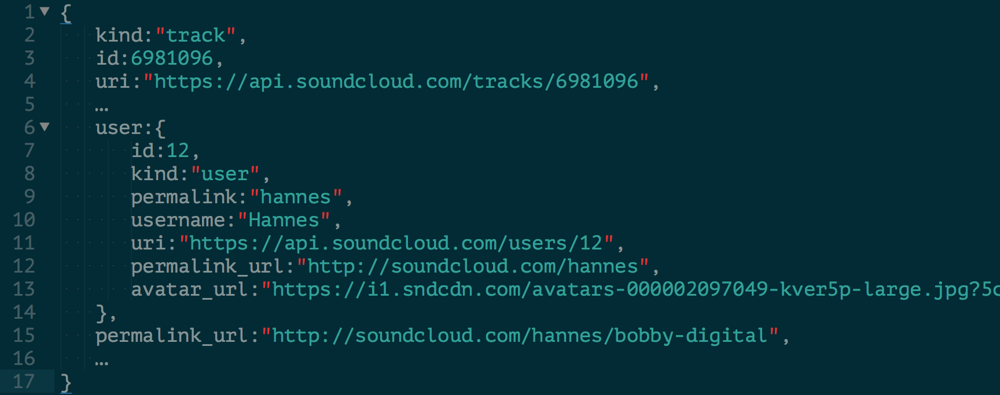
Backbone Modules
Views only use what they need
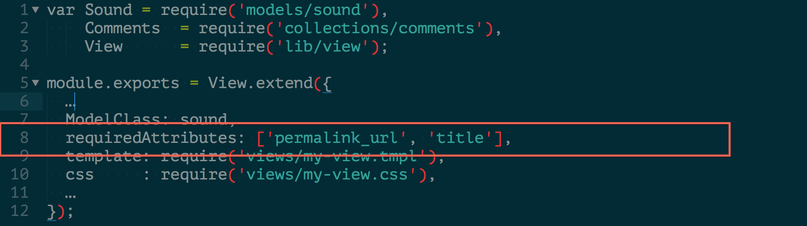
Backbone Modules
Models Releasing
- Instance store must let go at some point
- When a model is “constructed”:
usage++
- When a model is “released”:
usage--
- Periodically, remove unused models